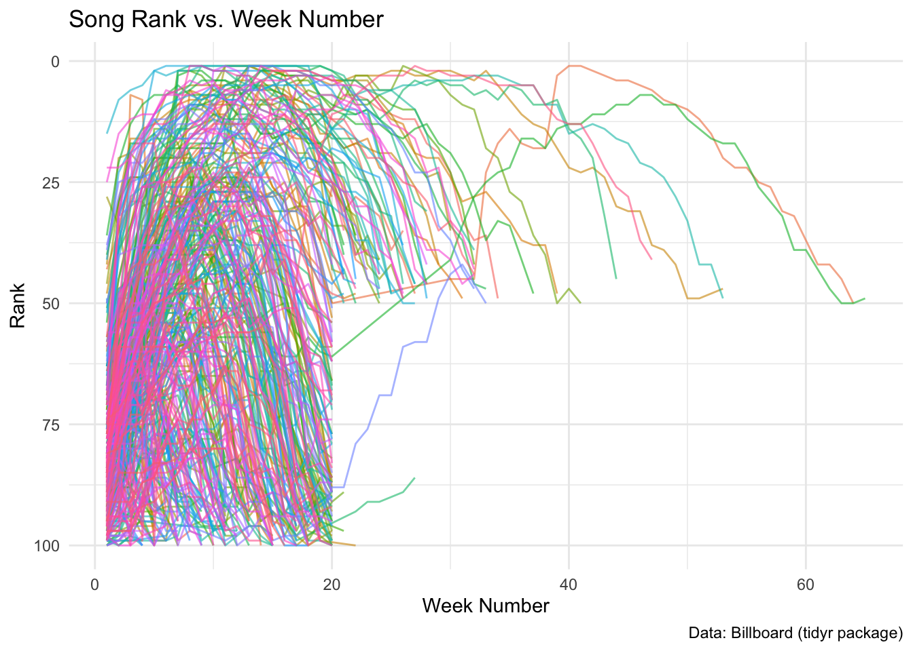
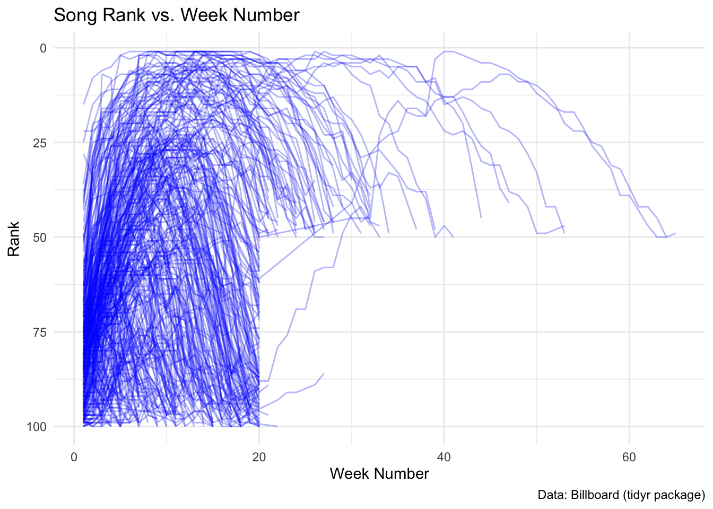

Tips and recommendations for learning the tidyverse with AI tools.
Author
Mine Çetinkaya-Rundel
Published
January 20, 2025
As an educator who teaches data science with R, I have LOTS of opinions about the use of artificial intelligence (AI) tools when learning R. But I will keep this post the use of generative AI tools, like Chat GPT, in learning R, and specifically learning to do data science with R and the tidyverse.1
I’ll first walk you through three case studies that demonstrate what asking for help from a generative AI tool looks like. Then, I’ll wrap up the post with some tips and good practices for getting the most out of help provided by these tools.
Before we get started, though, it’s important to note that knowledge bases of Large Language Models (LLMs) that underlie popular generative AI tools are private and lack transparency. There are important societal concerns about the fairness of equitable access to these tools. It’s unclear how developers or users of these models can be held accountable. Additionally, there is an environmental impact to using these tools.
The experience
Case study 1: Reshaping and plotting
The first case study features an example on reshaping and plotting the billboard data frame and it’s directly out of R for Data Science. In fact, it’s worked out in the book. Here is the initial prompt:
Use the billboard dataset in the tidyr package to create a visualization of rank vs. week number for each song in the dataset.
And the following is what Chat GPT by Open AI suggests as the first answer.
The billboard dataset from the tidyr package contains weekly rankings of songs on the Billboard charts. Here’s how you can visualize the rank vs. week number for each song in the dataset using R:
# Load required librarieslibrary(tidyr)library(ggplot2)library(dplyr)# Load the billboard datasetdata("billboard")# Prepare the data for visualizationbillboard_long <- billboard |>pivot_longer(cols =starts_with("wk"),names_to ="week",values_to ="rank",names_prefix ="wk",values_drop_na =TRUE )# Convert week to a numeric valuebillboard_long$week <-as.numeric(billboard_long$week)# Create the visualizationggplot(billboard_long, aes(x = week, y = rank, group = track, color = track)) +geom_line(show.legend =FALSE, alpha =0.6) +scale_y_reverse() +# Reverse the y-axis since rank 1 is the top positionlabs(title ="Song Rank vs. Week Number",x ="Week Number",y ="Rank",caption ="Data: Billboard (tidyr package)" ) +theme_minimal()

Chat GPT also provides a neat explanation of the code:
Explanation
Pivoting the Data: The billboard dataset is in wide format, with week columns (wk1, wk2, etc.). We use pivot_longer() to reshape it into a long format with week and rank columns.
Rank vs. Week Plot: Each song’s weekly rankings are connected with lines (geom_line()), and we reverse the y-axis since rank 1 is the best.
Grouping by Track: The group aesthetic ensures lines are drawn separately for each song.
Output
This will create a line plot where each line represents a song’s rank progression over weeks. The y-axis is reversed to reflect higher rankings at the top.
There are a few things about this answer that are promising:
The response is a tidyverse approach.
It uses pivot_longer() as opposed to the superseded alternative gather().
However, the resulting plot doesn’t show exactly what the prompt asked for – the lines are colored by track, which produces a busy plot that is difficult to interpret. While this is not ideal, it’s something a new learner can easily spot and ask Chat GPT for a follow up correcting it. For example, a subsequent prompt like the following fixes this issue:
Can you redraw the plot without coloring each line by track?
# Create the visualization without coloring by trackggplot(billboard_long, aes(x = week, y = rank, group = track)) +geom_line(alpha =0.3, color ="blue") +scale_y_reverse() +# Reverse the y-axis since rank 1 is the top positionlabs(title ="Song Rank vs. Week Number",x ="Week Number",y ="Rank",caption ="Data: Billboard (tidyr package)" ) +theme_minimal()

Note, however, that the only change wasn’t omitting the color = track aesthetic mapping. The alpha level is also changed (from 0.6 to 0.3) without a justification for that change and the lines are colored "blue". None of these are bad or wrong choices, but they can be confusing for new learners. Similarly, using theme_minimal() is not a bad or wrong choice either2, but it’s not necessary, but this might not be obvious to a new learner.
Furthermore, while Chat GPT “solves” the problem, a thorough code review reveals a number of not-so-great things about the answer that can be confusing for new learners or promote poor coding practices:
The code loads packages that are not necessary: tidyr and ggplot2 packages are sufficient for this code, we don’t also need dplyr. Additionally, learners coming from R for Data Science likely expect library(tidyverse) in analysis code, instead of loading the packages individualy.
There is no need to load the billboard dataset, it’s available to use once the tidyr package is loaded. Additionally, quotes are not needed, data(billboard) also works.
The code mixes up tidyverse and base R styles:
Changing the type of week to numeric can be done in a mutate() statement with the tidyverse, which would then warrant loading the dplyr package.
This can also be done within pivot_longer() with the names_transform argument.
All of these are addressable with further prompts, as I’ve done at https://chatgpt.com/share/678f1dee-4af0-8000-befe-6df0a8d70fba, in the last two prompts. But doing so requires being able to identify these issues and explicitly asking for corrections. In practice, I wouldn’t have asked Chat GPT to correct everything for me, I would have stopped after the first suggestion, which was a pretty good starting point, and made the improvements myself. However, a new learner might assume (and based on my experience seeing lots of near learner code, does assume) the first answer is the right and good or best answer since (1) it looks reasonable and (2) it works, sort of.
Furthermore, requesting improvements in subsequent calls can result in surprising changes that the user hasn’t asked for. We saw an example of this above, in updating the alpha level. Similarly, in https://chatgpt.com/share/678f1dee-4af0-8000-befe-6df0a8d70fba you can see that asking Chat GPT to not load the packages individually but to use library(tidyverse) instead results in this change as well as not loading the data with a data() call and adding a data transformation step with mutate() to convert week to numeric:
# Load the tidyverse packagelibrary(tidyverse)# Load the billboard dataset and prepare the databillboard_long <- billboard |>pivot_longer(cols =starts_with("wk"),names_to ="week",values_to ="rank",names_prefix ="wk",values_drop_na =TRUE ) |>mutate(week =as.numeric(week)) # Convert week to numeric
Both of these are welcome changes, but it can be surprising to a new learner why they’re combined with updating the library() call. This is happening because with each call Chat GPT is “trying again” – it’s not just editing the previous answer but it’s regenerating an answer with additional context.
Case study 2: Data cleaning
The next example is a lot more vague as it’s a task that, if someone asked me for help, I would reply with “Can you share the data with me?”, but Chat GPT happily generates an answer. That’s probably one of the reasons why people love these tools, they never respond to a question with another question, at least not in my experience.
Below is the prompt for this case study. I’ll provide it with no background first, so you can read it as the AI tool would “read” it without any background.
Another variable that needs some cleaning up is membership_status. Currently it should either be NA or contain some text that says “Select … to register for this group”. Recode this variable to say "Closed" if the current value is NA or "Open" otherwise. Save the resulting dataset with this new variables as clubs, i.e., overwrite the original data frame. Then, display the first 10 rows of the dataset, moving membership_status to the beginning of the dataset to make sure it appears in the output in your rendered document.
This time, let’s try Claude by Anthropic. Below is the first response:
I’ll help you clean up the membership_status variable. Let’s break this down into steps:
# Recode membership_status to "Closed" if NA, "Open" otherwiseclubs$membership_status <-ifelse(is.na(clubs$membership_status), "Closed", "Open")# Reorder columns to put membership_status firstclubs <- clubs[, c("membership_status", setdiff(names(clubs), "membership_status"))]# Display first 10 rowshead(clubs, 10)
This code will:
Use ifelse() to recode the variable based on whether it’s NA
Reorder the columns to put membership_status first
Show the first 10 rows of the modified dataset
Would you like me to explain any part of this solution in more detail?
I like the offer to explain more at the end! However, the suggested code does not use the tidyverse. In fact, it’s perhaps surprising that it uses R, this could very well have been a task for Python or anoher language commonly used for data science problems.
Let’s try again:
Can you suggest an answer that uses the tidyverse instead of base R?
And here is the result:
Here’s how to accomplish the same tasks using tidyverse functions:
Uses mutate() with if_else() to recode the variable
Uses relocate() to move membership_status to the front
Shows the first 10 rows using head()
The tidyverse version is more readable and follows the principle of chaining operations with the pipe operator (%>%). if_else() is the tidyverse equivalent of base R’s ifelse(), with stricter type checking.
Would you like me to explain any of these functions in more detail?
We’re getting there! For new learners of the tidyverse there are still a few aspects of this code that might be misleading:
It doesn’t use the base pipe operator (|>), which is the pipe operator used in R for Data Science.
Line breaks and indentation does not follow tidyverse style guidelines, which suggest that if the arguments to a function don’t all fit on one line, each argument should go on its own line.
If clubs is a tibble, printing it will only display the first 10 rows anyway, so there’s no need for the head() call.
Once again, it’s possible to ask the tool to make these updates. Claude doesn’t provide a sharing link for the conversation, but I’ve saved it at https://gist.github.com/mine-cetinkaya-rundel/c74dc7c5f2a27a846574edd063988431. Even with vague prompts like “If clubs is a tibble, it’ll only print out the first 10 rows anyway,” it does exactly what we would want it to do, resulting in the following:
The operative word here being “want”. Once again, someone with enough experience with R and the tidyverse would not explicitly ask for these improvements; they would just make them themselves and carry on. But someone who is just learning the tidyverse would likely stop much earlier. In my experience, many new learners stop after the very first prompt, which looks unfamiliar, and hence potentially intimidating. For learners of the tidyverse, the simple “Can you do this with the tidyverse?” can be a very useful prompt improvement that gets them majority of the way there.
Case study 3:
Tips and good practices
Obvious: provide context and engineer prompts.
Run the code it gives you, line-by-line (even if in a pipeline)
Sometimes unnecessary group()/ungroup()s or select()s get injected
tidyverse data transformation pipelines and ggplot layers are easy to run at once, with code doing many things with one execution prompt (compared to base R where you execute each line of code separately)
approach as “i’m trying to learn how to do this” not “solve this for me”
For humans, taste for code develops faster than ability
For LLMs this is the opposite
They’ll happily barf out code that runs without regard to cohesive syntax, avoiding redundancies, etc.
Some “cleanup” tips:
Remove redundant library calls.
Use pkg::function() syntax only as needed and consistently.
Avoid mixing and matching base R and tidyverse syntax (e.g., in one step finding mean in a summarize() call and in another step as mean of a vector, mean(df$var).
Remove unnecessary print() statements.
Might suggest code that is wrong:
if it errors, that’s easy to catch
sometimes it suggests arguments that don’t exist that R might silently ignore
could be an argument you don’t need
could be one you need but not being used
could saying “only use arguments that are real” helpful?
Can get stuck, start a new chat instead of continuing in the same.
copilot – figure out wait time that works for you, not too fast
maybe replacement for addins
generate a dataset with certain features, helps with creating reprex examples, helps with iteration
Footnotes
And maybe a future post on teaching R in the age of AI!↩︎